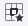

Die meisten Funktionen sind selbsterklärend. Nur spezielle Funktionen werden hier beschrieben.

Sie können auf Webseiten und auf interne Seiten verlinken. Für den Link auf eine interne Seite müssen Sie die Seiten-ID eingeben. Beim Aufrufen einer Seite wird die ID oben rechts auf der Seite angezeigt. Wenn Sie die Seiten-ID nicht kennen, können Sie den Seitentitel oder einen Teil davon eingeben. Nach dem Speichern der Seite zeigt Ihnen Minerva für jeden Titellink eine mögliche Seite zur Auswahl an.
 dient zum Auswählen einer Bilddatei von der Festplatte, um sie an der aktuellen Cursorposition einzufügen.
dient zum Auswählen einer Bilddatei von der Festplatte, um sie an der aktuellen Cursorposition einzufügen.
Wenn Sie ein Bild in der Zwischenablage haben, können Sie es mit Strg+V einfügen.
Klicken Sie auf eine Grafik und die kontextbezogene Bildsymbolleiste wird angezeigt. Wenn Sie eine Grafik einfügen, ist der erste Modus voreingestellt. Dies ist in den meisten Fällen der nützlichste Modus. Modus 2 ermöglicht es, dass der Text um die Grafik herumfließt. Modus 3 zeigt die Grafik als Absatz zwischen den Textabsätzen an. Schaltfläche 4 ist für den Untertitel und Schaltfläche 5 für den Alternativtext. Die Schaltflächen 4 und 5 verwenden wir nicht.
Klicken Sie auf die Tabellenschaltfläche und wählen Sie aus, wie viele Zeilen und Spalten Sie benötigen. Sie können später Zeilen oder Spalten hinzufügen oder entfernen.
Klicken Sie irgendwo in die Tabelle und dann auf das Gadget in der oberen linken Ecke.
Tabelle auswählen und Entf-Taste drücken.
Um einfach vor oder nach einer Tabelle zu tippen, wählen Sie die Tabelle aus und drücken Sie dann einmal die Pfeiltaste, je nachdem, wo Sie Inhalt hinzufügen möchten – davor oder danach. Die Tabelle ist nicht mehr ausgewählt und der von Ihnen eingegebene Text wird an der gewünschten Position angezeigt.
Klicken Sie irgendwo in die Tabelle und dann auf das Eingabesymbol am oberen oder unteren Rand.
Der Editor ermöglicht das Verschachteln von Tabellen in Zellen anderer Tabellen. Dies kann zum Erstellen erweiterter Diagramme oder Layouts auf Tabellenbasis verwendet werden. Die verschachtelte Tabelle kann wie eine normale Tabelle formatiert werden.
Wenn Sie eine Tabelle fokussieren, wird die kontextbezogene Tabellensymbolleiste angezeigt:

Kopfspalte
Spalte links/rechts einfügen
Spalte löschen
Spalte auswählen
Kopfzeile
Zeile darüber/darunter einfügen
Zeile löschen
Zeile auswählen
Rand
Hintergrund
Ausrichtung

Rand
Hintergrund
Ausrichtung (Standard ist zentriert)